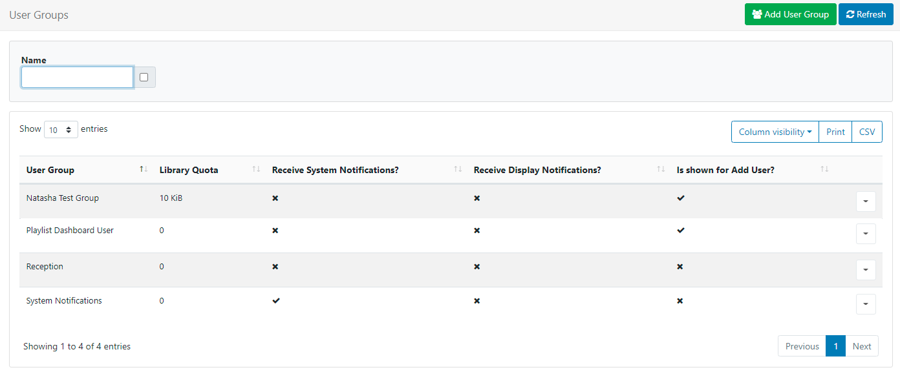

User Groups
User Groups are an easy way to configure Features and Share options to apply to multiple Users who are members of a particular User Group.
User Groups makes it easier to onboard new Users and manage system access. Users will inherit the Feature and Sharing options enabled for the group!
Create your own User Groups are select from a set of pre-configured groups, created to serve common functions in the CMS, available for new installations.

The pre-configured User Groups already have the required Features enabled to allow Users to carry out the chosen role. These can be modified if required to suit.
Create User Groups
User Groups are administered from User Groups under the Administration section of the main CMS menu. The User Group grid will open for you to add and manage User Groups:

Add User Groups to suit your specific needs and enable them to be shown for the New User onboarding wizard to make it easier to add Users to the right User Group from the start!
To add a new group, click on the Add User Group button and enter the required information for each tab:
General
- Give your User Group a Name to identify it within the CMS
- Enter a maximum amount of Library Quota allowed to be uploaded to the Library for this User Group. Enter 0 if no quota should be applied.
- Select the type, System or Display, if the User Group should receive notifications.
Description
Provide optional text to describe the created Group.
If enabled to show for onboarding new Users, this description (such as the Groups role) will be shown to make it clear for selection.
Onboarding Settings
Use this tab to control the options for onboarding new Users:
- Tick if you want to include this User Group for selection when using the onboarding wizard.
- Use the dropdown to select the Dashboard which will be used as a homepage for all members of this group.
- Click to Save.
Group Members
Once added to the grid, add Users to the User Group by using the row menu:
- Click on Members
- Select which Users should belong to the selected User Group.
- Click to Save.
Users can be assigned to one or more User Groups for ease of sharing and collaboration!
Membership can also be controlled from the User grid by using the row menu and selecting User Groups to open the Manage Membership form!
Features
Control the User Groups access to the relevant parts of the CMS by selecting Features from the row menu.
Copy
Make a Copy of an existing User Group from the row menu to make adjustments and easily create new Groups to suit your requirements.